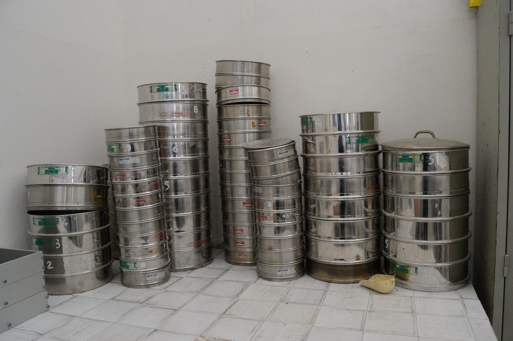
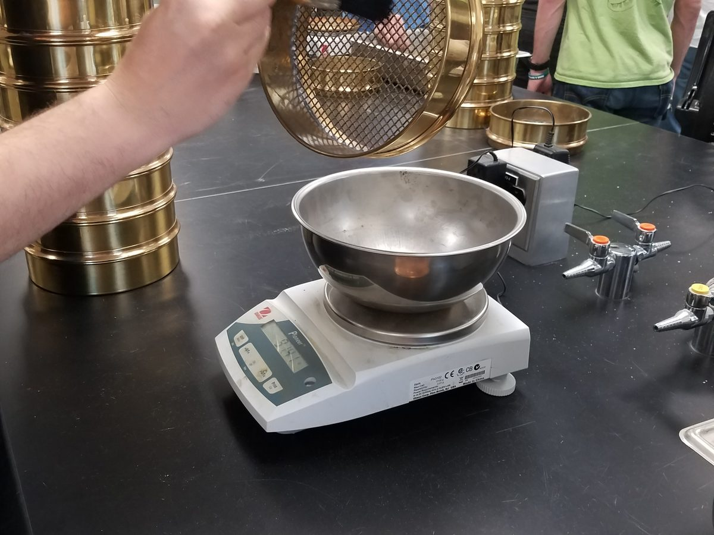
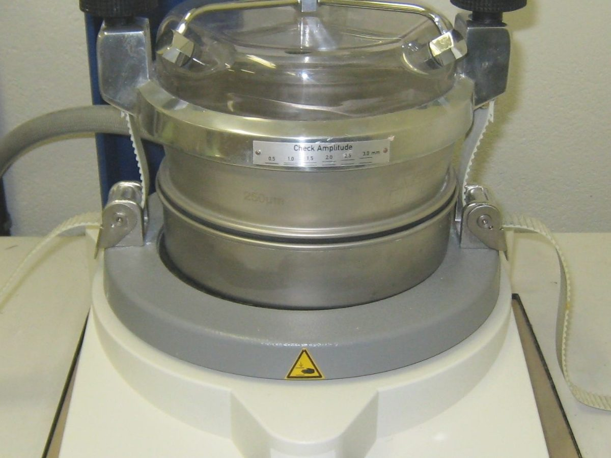
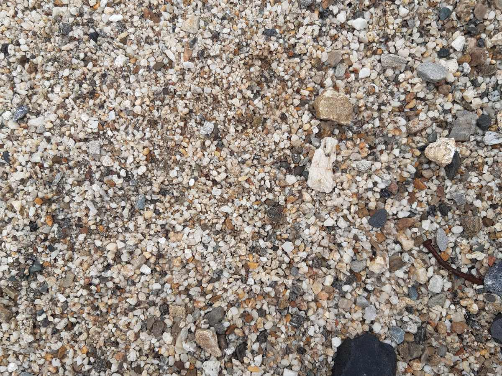

1Why grading matters

Aggregate is roughly 60 to 75 % of a concrete by volume, and it is the cheap part. The paste — cement and water — is the expensive part, and it has to fill every void between the aggregate particles and coat every surface. How much paste that takes depends on how the particle sizes are distributed: a well-graded aggregate, with a range of sizes that pack into one another, leaves few voids; a uniformly graded one, with all particles about the same size, leaves many; a gap-graded one, missing a size range, packs poorly and tends to segregate. Grading therefore sets the water and cement a mix needs, how it flows and finishes, and whether it stays together on the way from the chute to the form.
That is why the mix design in Part 1 asks for two numbers before anything else can be chosen: the nominal maximum size of the coarse aggregate, which sets the water and air content, and the fineness modulus of the sand, which sets the volume of coarse aggregate. Both come from one test, the sieve analysis, and this article is about running it and reading it.

Grading does not change the strength of the stone; it changes how much paste the concrete needs to be workable, and paste is where the cost, the shrinkage and the heat are.
2Sieves, percent passing, and the fineness modulus
A sieve analysis shakes a dried sample through a nest of sieves with square openings, largest on top, and weighs what stays on each one. The standard sieves are named by opening — 3 in., 2 in., 1 1/2 in., 1 in., 3/4 in., 1/2 in., 3/8 in. — down to about 5 mm, and by mesh number below that: No. 4 (4.75 mm), No. 8 (2.36 mm), No. 16 (1.18 mm), No. 30 (0.600 mm), No. 50 (0.300 mm), No. 100 (0.150 mm), No. 200 (0.075 mm). The ones used for the fineness modulus double in opening from one to the next.
Percent retained on a sieve is the mass it holds divided by the whole sample. Cumulative percent retained is the running total from the top sieve down. Percent passing is 100 minus the cumulative retained — the fraction finer than that sieve, and the number the grading bands are written in.
Fineness modulus (FM) is the sum of the cumulative percentages retained on the standard sieves — 3 in., 1 1/2 in., 3/4 in., 3/8 in., No. 4, 8, 16, 30, 50 and 100 — divided by 100. For a sand only the last seven contribute. A higher FM means a coarser sand.
Nominal maximum size (NMAS) is the smallest sieve opening through which the specification allows the whole aggregate to pass, a small amount retained being permitted; the maximum size is the smallest opening through which all of it must pass. In practice the NMAS of a sample is read as the smallest sieve retaining no more than 10 %.
3The test (ASTM C136)


- Get a fair sample and dry it. Reduce the field sample by splitting or quartering (ASTM C702) and dry it to constant mass at 110 ± 5 °C. The test sample must be big enough for the sizes in it: at least 300 g for a sand, and for a coarse aggregate about 1 kg for 3/8 in. nominal maximum size, 2 kg for 1/2 in., 5 kg for 3/4 in., 10 kg for 1 in., 15 kg for 1 1/2 in., 20 kg for 2 in.
- Nest the sieves and shake. Largest opening on top, pan on the bottom, lid on. Shake by hand or in a machine until the sieving is adequate: when not more than 1 % by mass of what is on any sieve passes it during one more minute of hand sieving. Do not overload: a sieve finer than No. 4 should carry no more than about 7 kg per square metre of screen, roughly 200 g on an 8 in. sieve, so split a large sample into more than one run.
- Weigh every fraction. The mass on each sieve and in the pan, to 0.1 % of the sample mass. Brush the sieves out; what clings to the mesh belongs to that sieve.
- Check the total. The fractions must add up to the original dried mass within 0.3 %. If they do not, something was lost or a sieve was not emptied, and the run is not acceptable — start again.
Dry sieving under-reads the dust: fines cling to the larger particles. When the amount finer than No. 200 matters — and for concrete sand it does — the sample is first washed over a No. 200 sieve (ASTM C117) and the washed-out mass is added to the pan.
Ten seconds on the shaker is not a test. The 1 %-in-one-minute rule is what makes one laboratory's percent passing comparable with another's; an under-shaken sample reads coarser than it is, and its fineness modulus comes out high.
4The arithmetic
Here is a 500 g sand, sieved and weighed. The example numbers are made up but typical. Each row's percent retained is its mass over the total; the cumulative column adds them from the top; percent passing is 100 minus the cumulative. Report the passing values to the nearest 1 % (the No. 200 fraction to 0.1 %).
| Sieve | Retained, g | Retained, % | Cumulative retained, % | Passing, % |
|---|---|---|---|---|
| 3/8 in. | 0 | 0.0 | 0.0 | 100 |
| No. 4 | 12 | 2.4 | 2.4 | 98 |
| No. 8 | 68 | 13.6 | 16.0 | 84 |
| No. 16 | 110 | 22.0 | 38.0 | 62 |
| No. 30 | 130 | 26.0 | 64.0 | 36 |
| No. 50 | 105 | 21.0 | 85.0 | 15 |
| No. 100 | 55 | 11.0 | 96.0 | 4 |
| No. 200 | 14 | 2.8 | 98.8 | 1.2 |
| pan | 6 | 1.2 | 100.0 | 0 |
The fineness modulus adds the cumulative percentages retained on the seven FM sieves — 0 + 2.4 + 16.0 + 38.0 + 64.0 + 85.0 + 96.0 = 301.4 — and divides by 100:
An FM of 3.01 is a coarse sand — near the top of the range C33 allows. In Part 1's Step 6 table a higher FM means less coarse aggregate per cubic yard, because a coarse sand already does some of the coarse aggregate's work.
5Reading the grading curve
Percent passing plotted against sieve opening is the grading curve. Openings are plotted on a logarithmic scale because the sieves double in size from one to the next, which turns the standard series into evenly spaced marks.

A smooth S-shaped curve inside the band is what you want. A flat stretch followed by a steep drop means a size range is missing — the classic gap-graded sand that bleeds and segregates. A curve that is nearly vertical means one size — a uniform sand that is harsh to finish and needs a lot of paste. Two aggregates with the same fineness modulus can have quite different curves, which is why the specification limits both the FM and every sieve.
The FM is one number; the curve is the whole story. Check both, because a gap-graded and a well-graded sand can share an FM and behave nothing alike.
6What ASTM C33 requires
ASTM C33 is the specification most US concrete aggregate is bought against. For fine aggregate it sets a band of percent passing on each sieve, a cap on dust, a rule against lumps of one size, and a range for the fineness modulus.
| Sieve | 3/8 in. | No. 4 | No. 8 | No. 16 | No. 30 | No. 50 | No. 100 |
|---|---|---|---|---|---|---|---|
| Passing, % | 100 | 95–100 | 80–100 | 50–85 | 25–60 | 5–30 | 0–10 |
- Dust. Material finer than No. 200 (by washing, ASTM C117) at most 3 % for concrete subject to abrasion and 5 % for other concrete; manufactured sands are allowed a little more.
- No lumps of one size. Not more than 45 % of the sand may pass one sieve and be retained on the next.
- Fineness modulus between 2.3 and 3.1, and once a mix is designed around a sand, later shipments may not drift more than 0.20 from that base FM — the mix would have to be re-proportioned.
Coarse aggregate is specified by size number, each a band of its own. The common ones for structural concrete are these; sieves not listed for a size carry no limit.
| Size | 2 in. | 1 1/2 in. | 1 in. | 3/4 in. | 1/2 in. | 3/8 in. | No. 4 | No. 8 | No. 16 |
|---|---|---|---|---|---|---|---|---|---|
| 467 (1 1/2 in. to No. 4) | 100 | 95–100 | — | 35–70 | — | 10–30 | 0–5 | — | — |
| 57 (1 in. to No. 4) | — | 100 | 95–100 | — | 25–60 | — | 0–10 | 0–5 | — |
| 67 (3/4 in. to No. 4) | — | — | 100 | 90–100 | — | 20–55 | 0–10 | 0–5 | — |
| 7 (1/2 in. to No. 4) | — | — | — | 100 | 90–100 | 40–70 | 0–15 | 0–5 | — |
| 8 (3/8 in. to No. 8) | — | — | — | — | 100 | 85–100 | 10–30 | 0–10 | 0–5 |
The first sieve in the size's name — 1 in. for No. 57 (1 in. to No. 4) — is the nominal maximum size the mix design uses; the sieve that must pass 100 % is the maximum size. Coarse aggregate dust is capped at 1 % (1.5 % for crushed-stone dust of fracture).
7Try it: from sieve masses to the C33 band
The numbers below are example numbers. Enter the mass retained on each sieve and the calculator computes the percentages, the fineness modulus, the nominal maximum size, checks every sieve against the ASTM C33 band you choose, and plots the curve on that band. Enter the dried mass you started with and it also checks the 0.3 % rule.
- Total sieved
- —
- Fineness modulus
- —
- Nominal max. size
- —
- Verdict
- —
Percentages are shown to 0.1 % in the table so the arithmetic can be followed; a report would round percent passing to 1 %. The fineness modulus of a coarse aggregate is computed the same way, counting the sieves finer than the finest one used as fully retained.
8Common mistakes
- Not shaking long enough. The sample reads coarser than it is. Apply the 1 %-in-one-minute check on at least one sieve before you believe a result.
- Overloading the fine sieves. Particles cannot reach the openings through a thick bed; split the sample instead.
- Losing mass and carrying on. If the fractions do not add to the start mass within 0.3 %, the run is void. Brush the sieves; wear a dust mask, not a fan.
- Including the pan or the No. 200 in the FM. Only the seven standard sieves count for a sand. Adding the No. 200 line inflates the FM.
- Judging a sand by its FM alone. The band and the 45 % rule catch gap grading that the FM hides.
- Dry-sieving for the dust content. Fines cling to the coarse particles; wash over the No. 200 first (ASTM C117) when the dust limit matters.
- Reading the maximum size as the nominal maximum size. For a No. 57 stone the sieve that passes 100 % is 1 1/2 in.; the mix design wants 1 in.
9Key takeaways
- Grading sets the paste demand, workability and cohesion of a concrete; the sieve analysis is how it is measured.
- Percent passing is 100 minus the cumulative percent retained; the fineness modulus is the sum of the cumulative percent retained on the seven (or ten) standard sieves divided by 100.
- A valid run needs a big enough dried sample, adequate shaking (≤ 1 % in one more minute), unloaded sieves, and fractions that add up within 0.3 %.
- ASTM C33 limits every sieve, the dust (3 or 5 %), lumps of one size (45 %), and the FM (2.3 to 3.1, ± 0.20 from the base); coarse aggregate is bought by size number, whose first sieve is the nominal maximum size.
Sources: ASTM C136/C136M (sieve analysis), C117 (material finer than No. 200 by washing), C125 (terminology: fineness modulus, nominal maximum size), C702 (sample reduction), C33/C33M (grading requirements). Precision is stated qualitatively.
Photo credits: Tamis analyse granulométrique by Habib M'henni, CC BY-SA 3.0; Sieve Analysis by Soccer jim2002, CC BY-SA 4.0; Vibrating sieve by Cjp24, CC BY-SA 3.0; Varieties of Gravel by Sabina Bajracharya, CC BY-SA 4.0; all via Wikimedia Commons. The photos were resized, cropped and recompressed for the web.
{kind=link}
{kind=link}
{kind=link}
{kind=link}